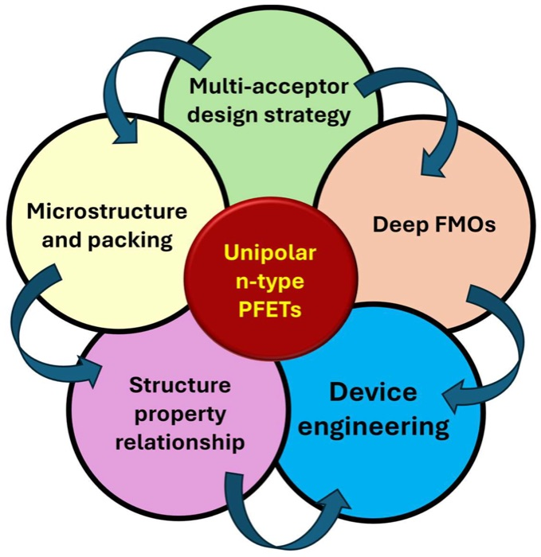
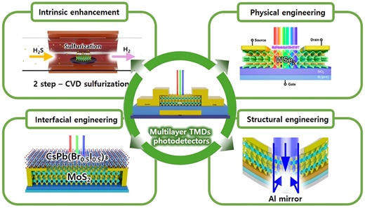
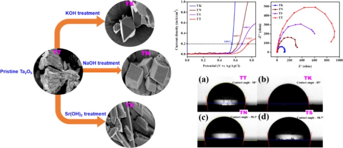
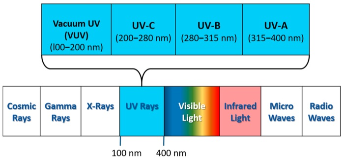
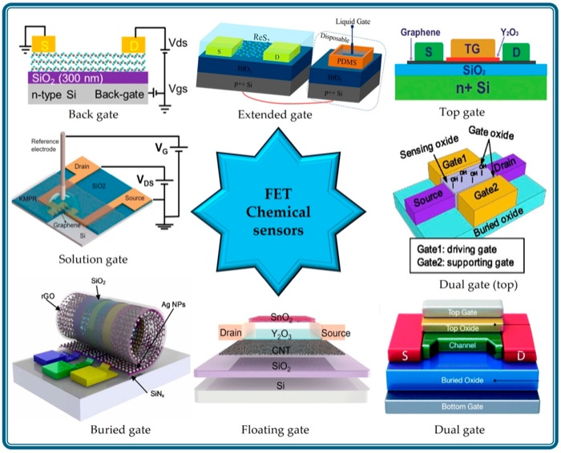
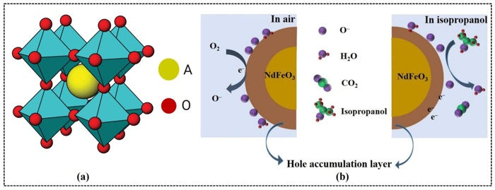
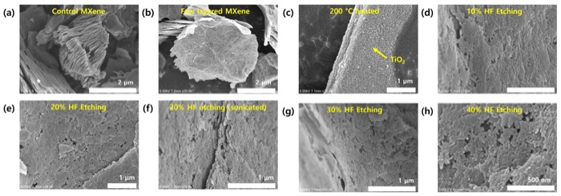
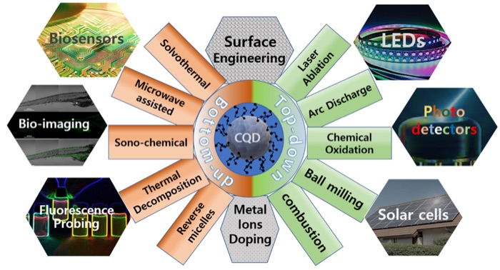

2025
[56] Multi- and All-Acceptor Polymers for High-Performance n-Type Polymer Field Effect Transistors, Polymers, 12월 (2025)
Ganapathi Bharathi†, Kyoungwon Kwak†, Sungmin Park†, Seongin Hong*

[55] Multilayer Transition Metal Dichalcogenide Photodetectors: Systematic Performance Enhancement through Complementary Engineering Strategies, ACS Applied Electronic Materials, 9월 (2025)
Ganapathi Bharathi†, Kyoungwon Kwak†, Sungmin Park†, Seongin Hong*

[54] Based-induced phase and morphology evolution of Ta2O5 to Ta-based compound nanostructures: synthesis and characterization, Journal of Materials Science, 9월 (2025)
Vijayakumar Vaishag, Seongin Hong*, Jin-Seo Noh*

[53] Advances in Silicon-Based UV Light Detection, Micromachines, 9월 (2025)
Arif Kamal, Seongin Hong*, Heongkyu-Ju*

[52] Gate Engineering in Two-Dimensional (2D) Channel FET Chemical Sensors: A Comprehensive Review of Architectures, Mechanisms, and Materials, Chemosensors, 6월 (2025)
Ganapathi Bharathi, Seongin Hong*

[51] Recent Progress on Rare-Earth Orthoferrites for Gas-Sensing, Chemosensors, 4월 (2025)
Ganesh Kotnana, Seongin Hong*

[50] Polythiophene/Ti3C2TX MXene Composites for Effective Removal of Diverse Organic Dyes via Complementary Activity of Adsorption and Photodegradation, Molecules, 3월 (2025)
Young-Hwan Bae, Seongin Hong*, Jin-Seo Noh*

[49] Carbon Quantum Dots: Synthesis, Characteristics, and Quenching as Biocompatible Fluorescent Probes, Biosensors, 2월 (2025)
Arif Kamal, Seongin Hong*, Heongkyu Ju*
